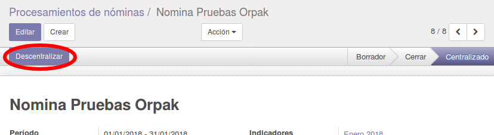

Instrucciones de Uso
Una vez creado el proceso de nómina, y luego de haber generado las nóminas que se van a pagar, se debe cerrar la misma (dejar en estado Cerrado) para que se habilite el botón Centralizar en la cabecera del documento. Se deberá indicar dentro del proceso cual será el Diario y la Fecha Contable para poder centralizar las nóminas. Al pulsar el botón Centralizar se correrá el proceso interno donde se agruparán las reglas salariales y se crearán los apuntes contables dentro del asiento contable, y el proceso de nómina pasará a estado Centralizado, donde se habilitará un campo Asiento que enlazará al asiento contable recién creado.

Este proceso puede ser reversado, una vez centralizadas las nóminas y el proceso se muestre en estado Centralizado, se habilitará un botón en la cabecera del documento del proceso Descentralizar, con el cual se podrá devolver el mismo a estado Cerrado y se borrará el asiento contable, esto con el fin de hacer correcciones a las nóminas de ser necesario.
